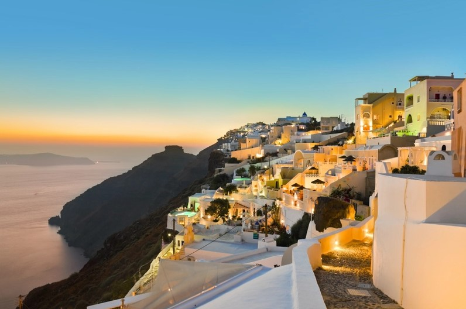
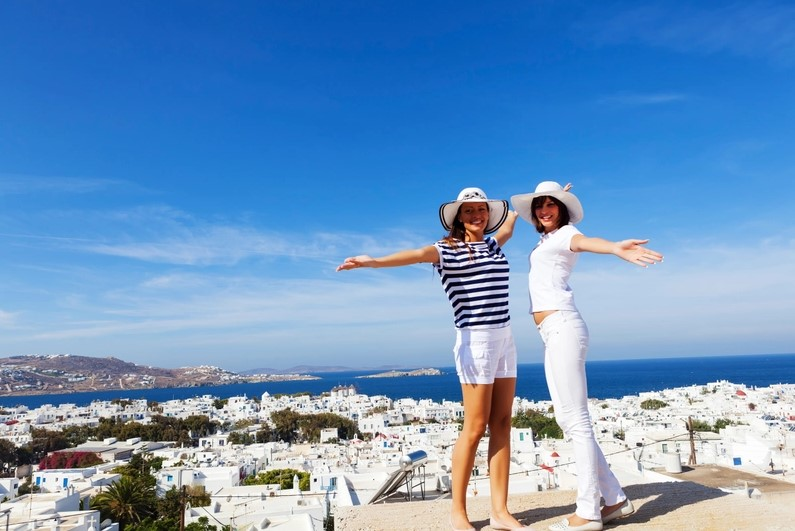
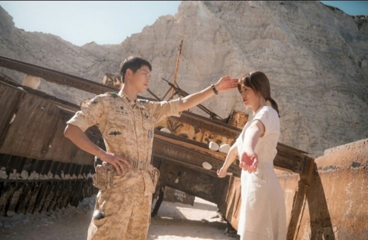
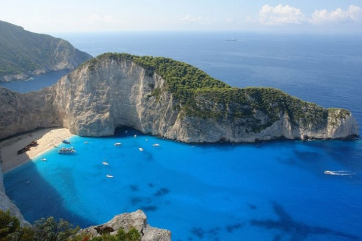

漂浮在蔚藍色的愛琴海中央的聖托里尼，擁有著純粹的白色房屋，耀眼的藍色海洋，和壯觀的黑色沙灘。到過的人才知道，為什麼 「上帝把最美的顏色都留在了這個浪漫的小島」。這裡是愛琴海裡的璀璨明珠和蘇格拉底筆下的自由之地，也是愛與浪漫開始的地方。

在聖托里尼伊亞西北邊的小城鎮伊亞(Oia)有著全世界最美的夕陽景色，許多在雜誌上看到聖托里尼島的美景都是在此拍攝。每一個轉角，每一條街道，每一棟建築都像是童話故事中才會出現的場景。

如果說聖托里尼島適合情侶結伴同遊，那麼米克諾斯島則是派對動物的天堂。米克諾斯有島上最一流的酒吧和夜店，深受環島遊人士歡迎，讓大家隨著音樂的舞動狂歡至通宵達旦。

到旭日初升，Mykonos的日出在希臘的白色風車襯托下更顯得夢幻浪漫，無論您是經歷了徹夜狂歡還是專程早起等待美景，這一片日出絕對會讓你精神振奮。
韓劇《太陽的後裔》其中一幕最令人深刻的場景就是海灘上有一艘破舊廢船的沉船灣(Navagio Beach)。

沉船灣位在希臘扎金索斯小島北部的Navagio海灘上，有天堂之島的美譽。燦爛的陽光與碧海藍天互相輝映，與沙灘上鏽斑累累的沉船殘骸形成強烈的對比。傳聞因走私船Panagiotis號在運送香煙時失事擱淺，隨著海浪漂到這片白色沙灘上因而得名沉船灣。令沉船灣聞名的原因不僅是因為這艘突如其來的船，這裡亦是全球的定點跳傘迷夢想來朝聖的地方。站在400米懸崖峭壁上往下望真的會令人不自覺腳軟，想挑戰自己的朋友一定要做足安全措施和在專人的指導下才玩。
